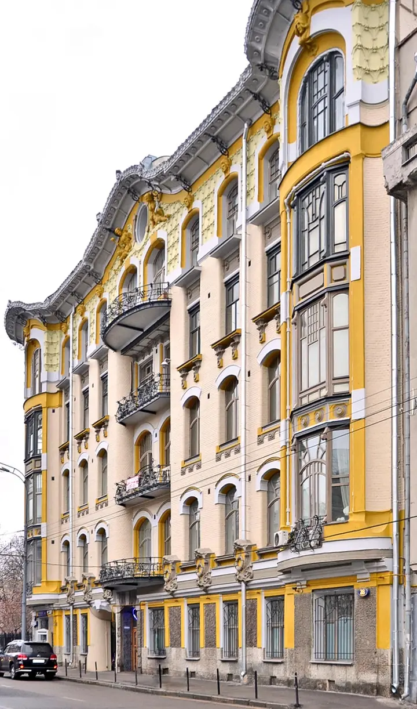
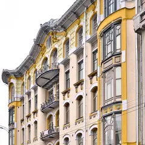

Фото: salech hcelas, CC BY 3.0 · Wikimedia Commons
Модерн · ЦАО
Доходный дом Исакова
Модерн Кекушева 1906 года: волнистый фасад, кованые балконы в духе Орта, львиные маски под карнизом. Весь дом в кадр помещается с противоположного тротуара Пречистенки.
- ₽ · до 1 500 ₽ на человека
- Новое в каталоге
- в 1 плане
Позвать сюда: Доходный дом ИсаковаОткрыть в каталоге: Доходный дом ИсаковаМаршрут до места: Доходный дом Исакова
Адрес и детали
- Адрес
- ул. Пречистенка, 28
Открыть на Яндекс Картах (в новой вкладке) - Метро
- м. Парк культуры
- Округ
- Центр (ЦАО)
- Цена
- до 1 500 ₽ на человека
- Проверено
- работает — проверили в ноябре 2026
Планы с этим местом 1

- Доходный дом Исакова · Модерн · м. Парк культуры
- 4 минуты пешкомМансуровский переулок · Старый переулок
- 13 минут пешкомДом Бурганова · Музей скульптуры
Волнистый фасад Кекушева, кривой Мансуровский переулок и дворики Бурганова, где бронза стоит среди кирпичных арок.
Открыть план: Пречистенка: волнистый модерн и сад бронзыПозвать сюда: Пречистенка: волнистый модерн и сад бронзы
Фото: salech hcelas, CC BY 3.0 · Wikimedia Commons
Входит в подборки
Похожие рядом
Что ещё рядом
Как позвать
- Выбери план, место или событие — в карточке адрес, цены и маршрут в Яндекс Картах.
- Нажми «Позвать сюда» — соберётся приглашение-игра для свидания или голосование для компании.
- Отправь ссылку в любой мессенджер: тебе ответят, а компания отметит, куда и когда может. Бесплатно и без регистрации.